Étendre et diversifier la production
Augmenter les superficies cultivées et introduire de nouvelles variétés de mangues et d’autres spéculations maraîchères pour répondre à la demande des marchés locaux et internationaux.
Du verger à la transformation, des productions agricoles reliées aux marchés.
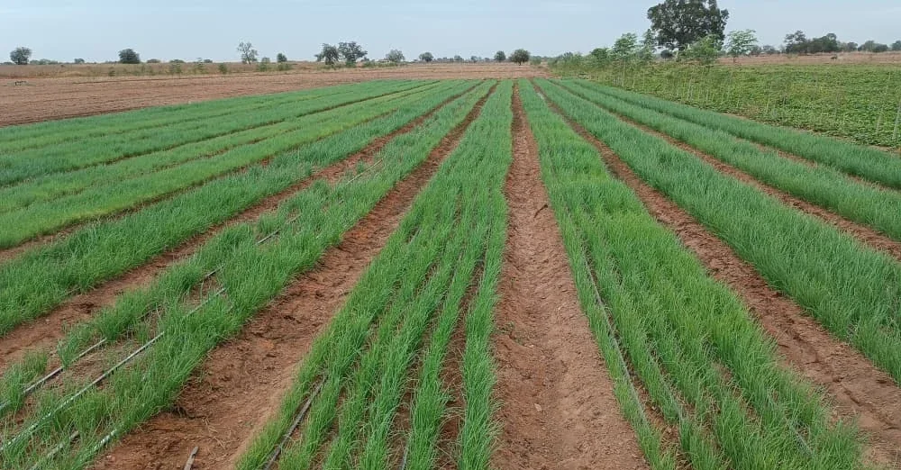
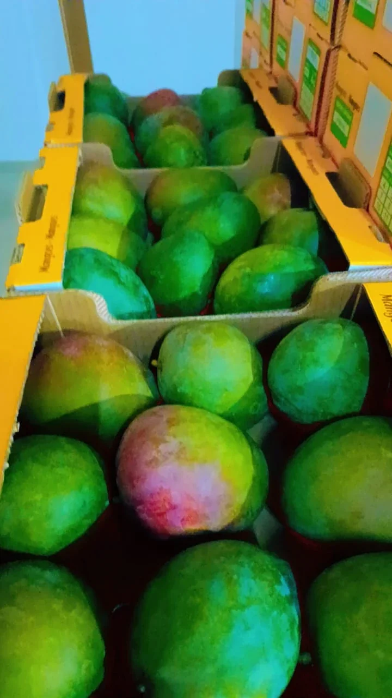
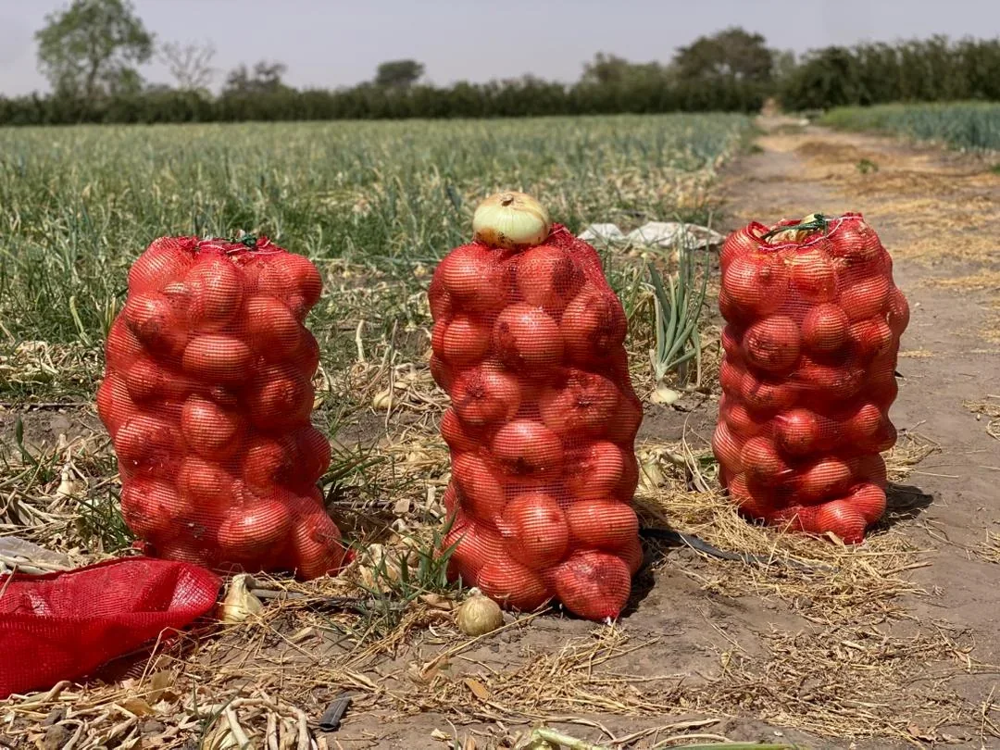
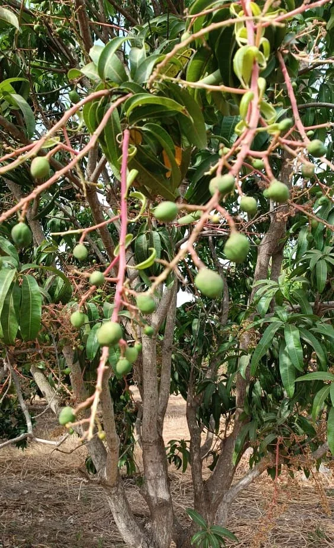
Au cœur du verger
Productions complémentaires
Le maraîchage et d’autres cultures complètent l’arboriculture. Les productions mentionnées par le domaine comprennent notamment les oignons et le maïs.
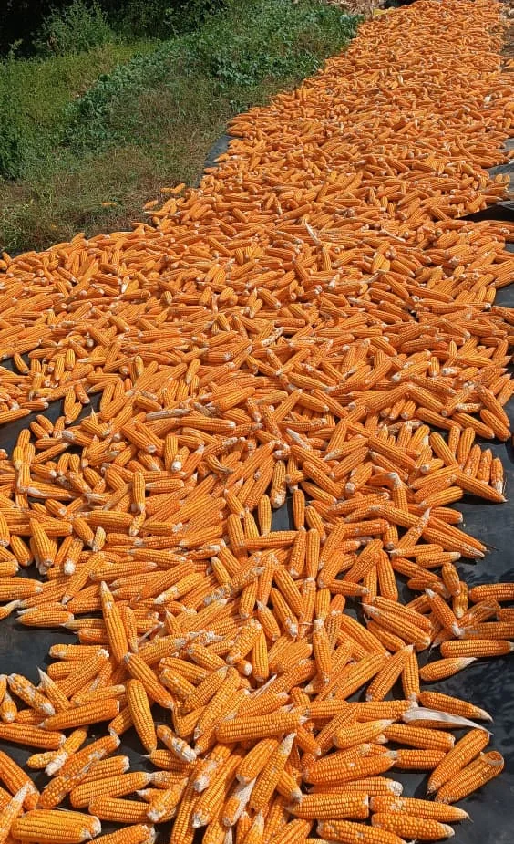
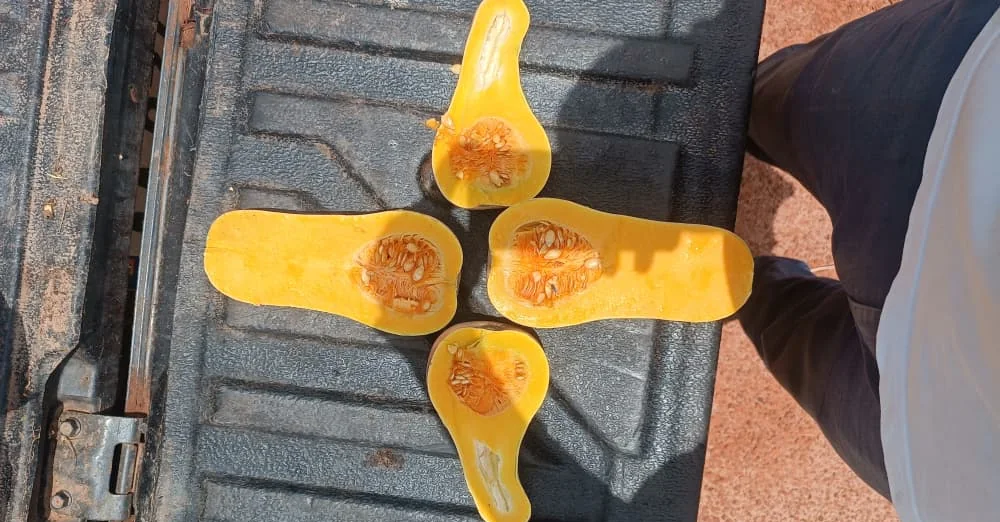
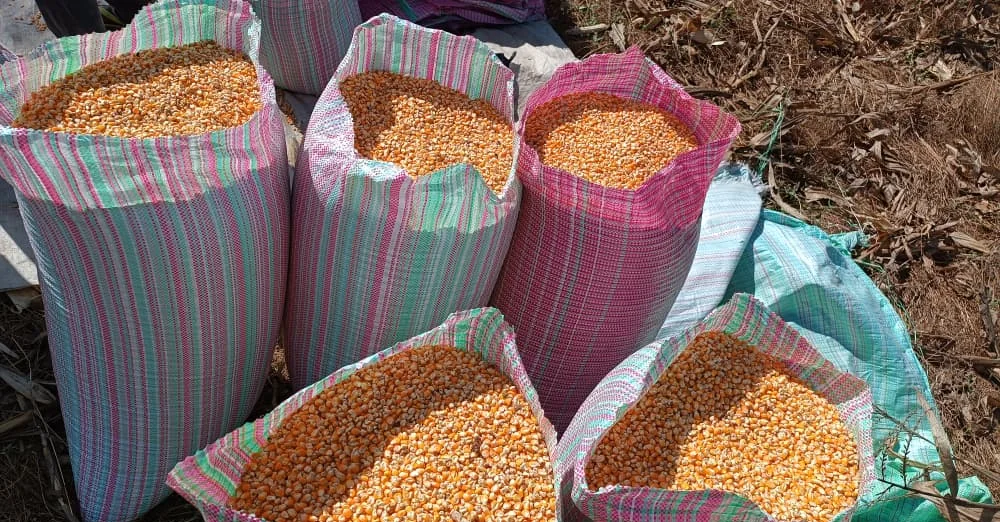
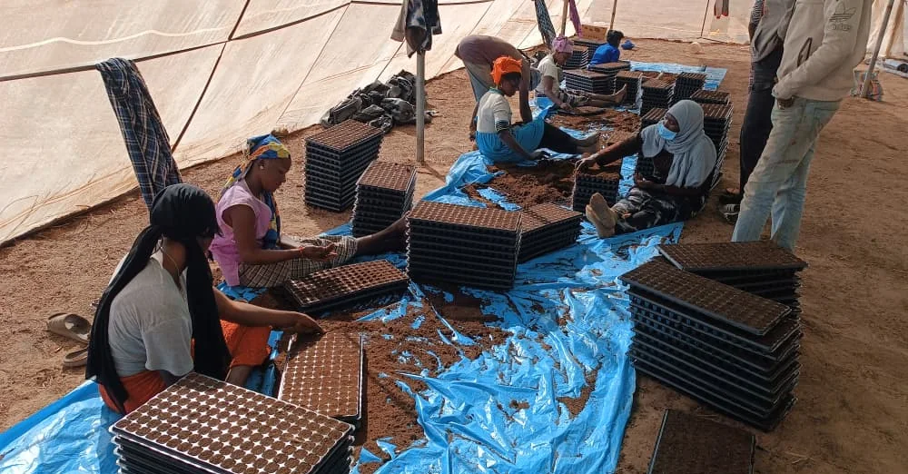
Le soin apporté à chaque étape, de la pépinière à la station de conditionnement.
Conditionnement & transformation
Depuis la première station de conditionnement construite à Noflaye, DAN a développé ses équipements pour accompagner la commercialisation des récoltes. Un second site a été construit à Kibik.
Entre 2020 et 2022, le domaine a construit une usine de transformation de mangues et de produits dérivés ainsi qu’un centre de conditionnement doté d’une chambre froide d’une capacité de quatre conteneurs.
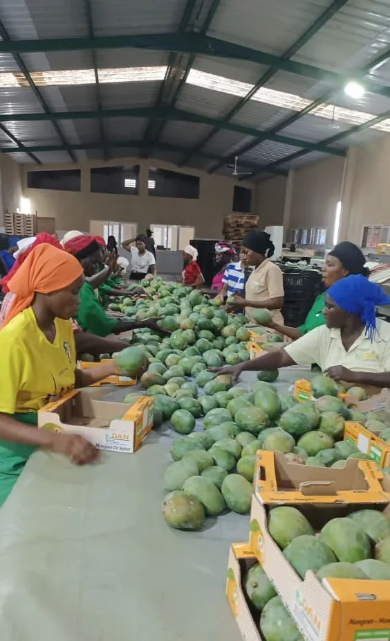
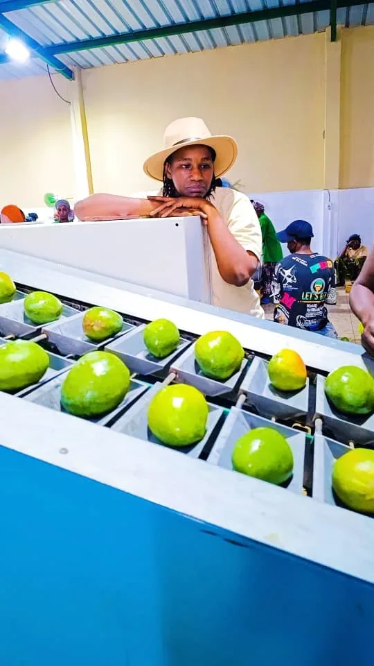
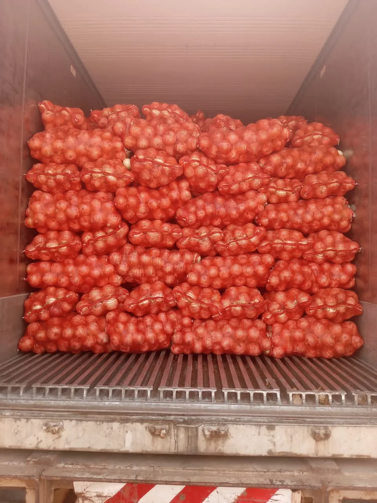
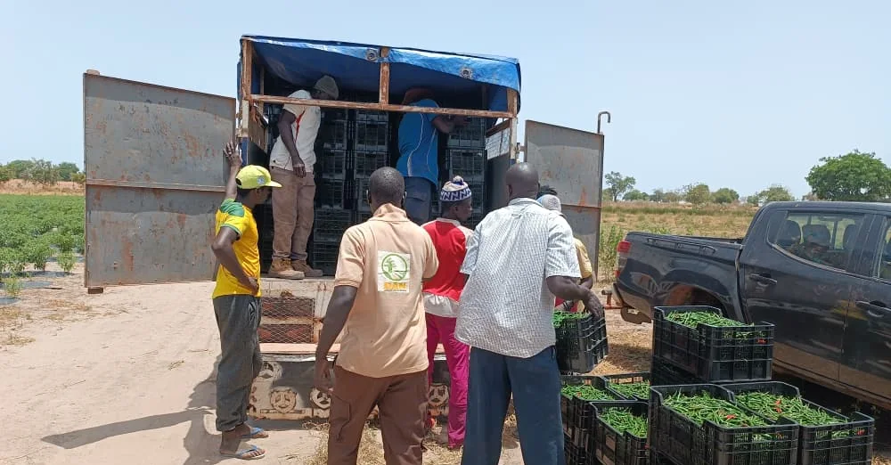
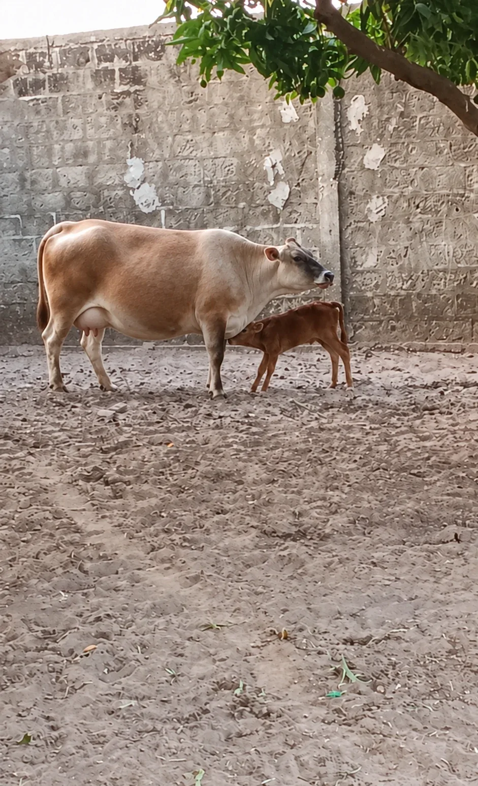
Des métiers complémentaires
L’arboriculture et le maraîchage s’inscrivent dans une activité agricole plus large. Les équipes du domaine couvrent également l’apiculture, l’élevage, la pisciculture et la transformation.
Ces fonctions spécialisées sont portées par des responsables de production animale, d’apiculture, de pisciculture et de transformation.
Nos projets futurs
DAN souhaite poursuivre son développement en renforçant sa production, ses outils techniques et les compétences de ses équipes.
Augmenter les superficies cultivées et introduire de nouvelles variétés de mangues et d’autres spéculations maraîchères pour répondre à la demande des marchés locaux et internationaux.
Intégrer des outils de surveillance des cultures et d’analyse des données pour améliorer les pratiques agricoles et optimiser les rendements. Les perspectives présentées incluent l’utilisation de drones pour la surveillance et les traitements phytosanitaires.
Développer des programmes de formation pour le personnel et les agriculteurs locaux, afin de partager le savoir-faire et les bonnes pratiques agricoles.
S’appuyer sur les certifications et démarches de durabilité obtenues pour renforcer la confiance des clients et faciliter l’accès à de nouveaux marchés.